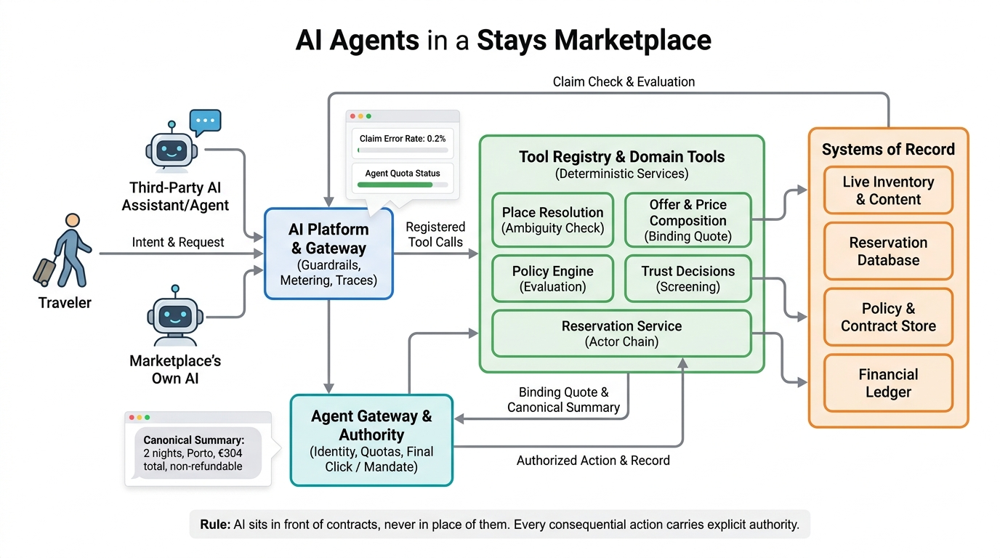

Part IX — LEADERSHIP: The Chief Architect's Agenda
AI Across the Stay: Agents, Assistants and Automation

Image generated by Google Gemini (gemini-3-pro-image-preview)
Part IX — LEADERSHIP: The Chief Architect's Agenda

Image generated by Google Gemini (gemini-3-pro-image-preview)